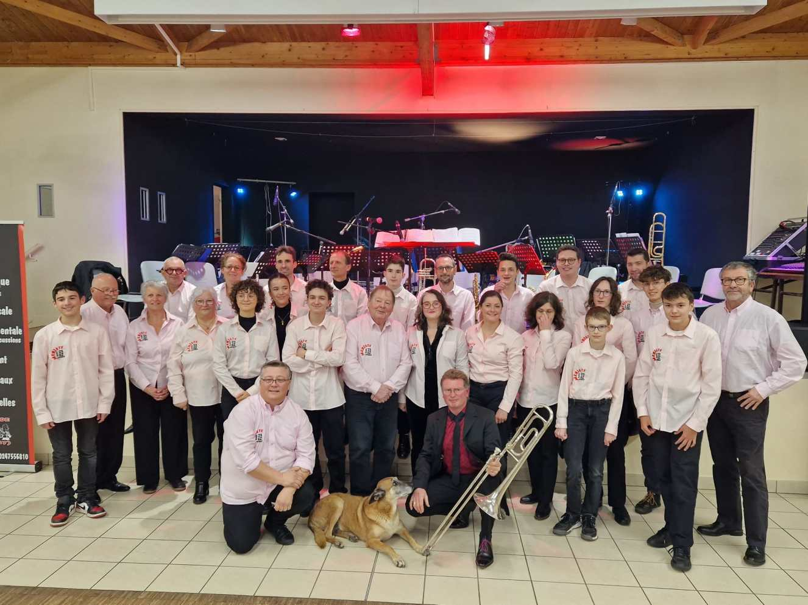

L’association Musicale de Luynes (AML) est née en 1994 de la fusion entre l’école de musique de l’A.C.L et la fanfare de Luynes, devenue Musique de Luynes. Elle est composée de 2 structures :
– La Musique de Luynes, en formation harmonie ou banda, propose une offre variée de prestations.
– L’école de musique qui propose un enseignement complet avec des professeurs diplômés.